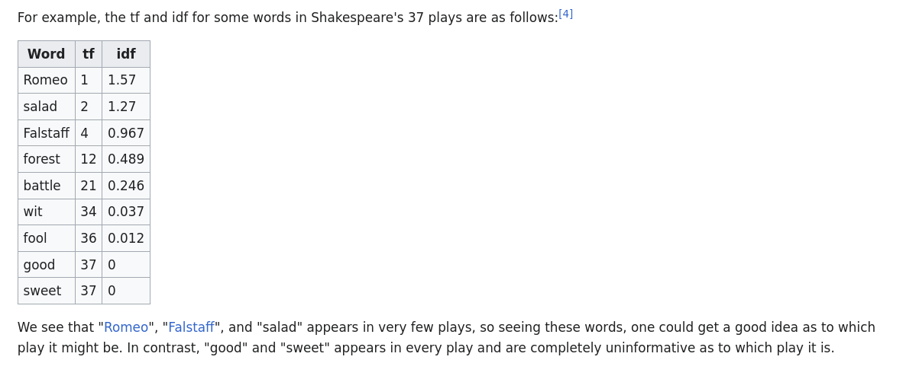

What is semantic search and why do we want it
“If cats looked like frogs we’d realize what nasty, cruel little bastards they are. Style. That’s what people remember.” ― Terry Pratchett, Lords and Ladies
This post originally appeared on: anandphilip.com
You’re searching for poems that talk about cutlery. Because you can. And also because compiling a list of poems about our relationship with food-ingestion-tools would be fun.
Maybe it’s not poetry you care about but the name of the company your boyfriend works at which he told you about three months ago but cant find on your Whatsapp. And obviously, it would be super awkward to ask him now.
We have disparate search needs is what I am trying to say.
Lexical search: how most search works
Definitions
Query: The text we enter into search fields when we want stuff found
Document: The file, website, chat, image, meme stash or entity that has the terms or could have the the right answers to your search
Corpus: The collection of all the documents that need to be searched across various searches. (your whole website for example)The standard way in which we do search is by matching the words or terms in a query with the terms in the corpus. So if you search for poems about cutlery the search will look for documents that have the words poems and/or cutlery and try to find ones that contain both the words.
Imagine, though, that the program has to scan through every document every time someone searches for something, hunting for instances of the word from scratch. This would be pretty time-consuming and also slightly stupid. So we need a way to store what words are in what documents.
Besides just matching or finding the word, we also need some way of knowing which document matches it better. This is called ranking. To solve both these problems people came up with the idea of indexes (or indices, if you’re a Latin snob).
What an index does is, it look over all the documents in a corpus, and creates a brief representation of the content of that document. So instead of searching over the whole document, now you just search over the representations. These representations also have some way of ranking the quality of the fit between the query and the document.
An example of such a representation1 is Term Frequency–Inverse Document Frequency (TF-IDF). What this does is,
- Lists all the words in each of the documents in a corpus and how frequently the occur in a document (term frequency).
- Calculates how common or how rare of each of these words are across the whole corpus. The common words get a score of 0, or close to zero and the rare words get high scores. 2
Why do we do this? In most documents, the words that appear most frequently would be things like the, and, is and stuff that doesn’t add any discriminatory power to the retrieval.
When I search for poems with cutlery there are going to be a whole lotta poems with the word with in them, so I can’t use with to rank the documents in any way. But the word cutlery probably appears in a small number of poems, so it is a good word for ranking the results.

So now your index of poems doesn’t just have the whole text of the poem but a list of the non-zero scoring words along with the scores, which allows us to get the top matches.
The most used and probably the best of these TF-IDF algorithms is the Okapi BM25 family of algorithms. They are absolutely fantastic in finding you the documents that are best matching the words you search for.
But what if you don’t know the precise thing you are searching for? This is also a problem as old as misplaced keys. One way to solve this would be to have some kind of a thesaurus. You search for cutlery and we expand the terms to include all the synonyms of the word. This is called query expansion. So instead of sending the term cutlery to the index, we can send cutlery, knife, fork, teaspoon and see what the index gives us.
But that means now you need to figure out which words you want to find synonyms for, how to store them, how to update them periodically etc. And what if you need to find synonyms of phrases, not words, eg. our relationship with modern day digital technology. That would make very large search term if we expanded each word. Still, this is a pretty damn good method and is used widely and is what Google uses to return close matches.

Another problem could be that you might misspell the word, or that your way of spelling antidisestablishmentarianism3 is different from the way it appears in the text, say “anti-dis-establishmentarianizm” or whatever. The usual solution to this is to add some “fuzzy” logic or approximate matching. This works by searching for words that are off or different by a few letters. Unfortunately this means that if you search for costly coat cuts, you’ll also get results for costly cat guts 4. Still, this too is pretty damn good and is usually a part of most search systems.
You could also offer spelling correction, as google often does. But problems with autocorrect are well known

I am compelled to point to yet another problem: Besides synonyms, there are words that are structurally similar, or stem from the same word. These too might make a good fit or a bad fit for a particular search query based on the context, for eg. if you’re searching for load bearing walls, it might be good to get results for load bearing tiles, but not good to get bear loading 5
Anyway, so what we need is a way to represent text that can account for
- Variations in the way a word is written
- Contextual meaning of words (A coat of paint vs a coat of mink)
- Spelling mistakes
- Synonyms
All these things are present in the way we write and store information. So if you were to take a sufficiently large sample of things people have written, you would find all of these things in this sample. This idea is what gives us semantic search.
Enter AI!

Kidding, AI is a marketing myth, who wants to buy “statistical-learning models”?
But that is what we do, we take a large corpus of text, and then derive a statistical model of the relationships between words in a multi dimensional space. And we do this by masking text and getting a model to fill in the blanks. No, seriously, that’s it. This is the basis of all LLMs.
What this does is, make a model memorize and therefore extract all the million ways in which any given word can be used in a language and also how each word in the corpus is related to every other word. This is not something we can manually compute and that is why we throw artificial neural networks at it.
Now, most LLMs and other things that are called AI these days don’t stop here, and have to predict specific things. But if you take off those prediction bits from the model what you have left is called an embedding. Which is a multi-dimensional representation of whatever it is that you trained the thing to do. Engineers, like many of us, suffering from grievous mathematics envy, call these representations vectors.
The way these work is that words and documents that are similar in meaning are represented closer to each other, or clustered. But this happens over many dimensions, so it’s not a simple 1 or 2 D relationship it captures.

See how the word noticed is close to, and connected to all the words that are similar in meaning. The above is a screenshot of one such embedding. I strongly urge you to explore this. Link: Word2Vec Tensorboard
Another tool to understand how words can be represented in multiple dimensions is this embedding explorer from Edwin Chen.
What is most interesting to me is that this rich and pretty accurate representation is produced using something as simple as fill-in-the-blanks.
Semantic Search
Searching for things using the information implicitly encoded in these vector spaces is called semantic search by software and ML people.6
So if you don’t want to manually manage everything from synonyms to contextual meaning, you could take a vector space trained on a very large corpus, convert your corpus into those kind of vectors, and then search over those vectors. This conversion just borrows the relationships that are already discovered by the model, which means its representations will be much richer than the ones in your corpus.7
These vector spaces are not like the indexes we spoke of earlier, they don’t have any explicit way of saying word x is present in document z and the score is high.
The search works by identifying documents that are “close” to the query in the vector space. The most commonly used metric to determine this distance is cosine similarity. But even if you can calculate the cosine distance between two words, doing this calculation for every word in your corpus against every word in the query would be mind-numbingly boring and also time and resource consuming. So we need some way to find the location in the vector space that is most likely to have good results, and get there quickly.
This is called approximate nearest neighbor search, and there are a bunch of great algorithms that have come up in the last few years that let you search over humongous datasets really fast.
The ones I like the most are Neighborhood Graph Trees and Hierarchical Navigable Small Worlds (HNSW)
Both of them work by dividing up your data into small clusters, or trees and then searching in those trees or clusters. But really, it’s a lot more complicated than that and to be honest I don’t really understand graph theory enough to know what they do. But what they do they do do well.
This might remind you of indexes, and that is what these create, just, vector and tree representations, not words.

image from Pinecone’s guide to semantic search, linked below
Summary
- You embed your corpus onto an existing language model’s vector space
- You then index your embedding using a ANN algorithm like NGT or HNSW
- And then you can search your corpus using semantic querying.
Thanks for reading.

This cat does not exist. Created with DeepAI
Citation
If you wish to cite this page, here you go
Philip. (2023, November 1). What is semantic search and why do we want it. Anand Philip’s Blog. Retrieved February 22, 2024, from https://anandphilip.com/what-is-semantic-search-and-why-do-we-want-it/Further reading and resources
- Viki Boykis has a great resource page and explanation of what embeddings are
- ANN-Benchmarks: This website has benchmarks for every approximate nearest neighbor algorithm you can think of [NGT and HNSW are the best]
- Pinecone, which is a vector database solution, has a great series on Natural Language Processing for Semantic Search
Footnotes
This is not the most commonly used representation, sometimes you just store the title of the document, somethings you store a description, it depends on the need of the system and users.↩︎
Engineers really love logarithms. We should too↩︎
I am, of course a disestablishmentarianist and several centuries behind on news↩︎
If you’re into coat cuts. Whatever they are, no judgement here.↩︎
I know, my metaphors need work. They are unemployed↩︎
Complicating the matters is that before there were large neural network based embeddings, there were the semantic web people and the ontology people and other people who wanted to solve this using structured representation of text. So software people are kinda stealing the term a little bit. More info: A survey in semantic search technologies↩︎
Thankfully there is a huge community of NLP nerds who like making these kinds of models easy to use (if you can Python, that is).↩︎